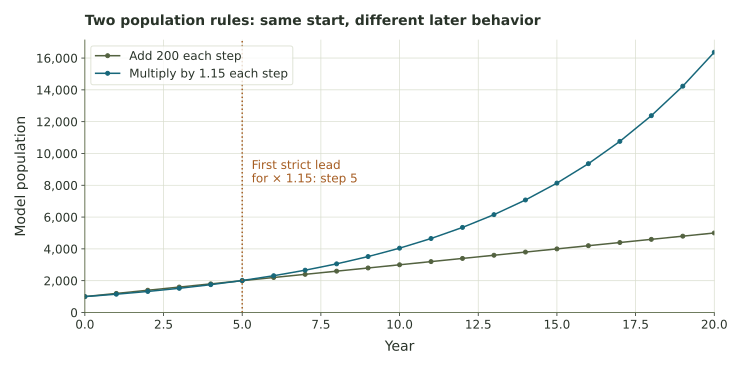

Classify numbers, build a signed path, compare scale factors, test equivalence, and follow two population rules.
Five investigationsSigned movementRepeated change
Getting started
Five investigations cover number systems, signed changes, scaling, fractions, and population models.
Enter fractions or decimals; round only where requested. Answers save automatically.
0 sections checked
Part 1 / Number systems
Choose the smallest listed system
Use N for positive natural numbers, Z for integers, Q for rational numbers, and R when the real number is irrational. Zero is an integer under these four choices.
Part 2 / Signed changes
Build the diver’s path
A diver starts at the surface, descends 15 meters, rises 8 meters, then descends 5 meters. Upward motion is positive and downward motion is negative. First place each stop on the line, then write the calculation.
Current marker
Change from last stop
Move the slider with a mouse, touch, or arrow keys. A correct stop records when you release it; the record button also checks the chosen position.
Part 3 / Scaling
How does the value change?
Start with 7. Predict the result of each operation, then check.
Operation on 7
Your prediction
Value after checking
7 × 3/2
Hidden until you check.
7 × 1/2
Hidden until you check.
7 ÷ 1/2
Hidden until you check.
7 ÷ 3
Hidden until you check.
Part 4 / Equivalent fractions
Test whether the locations agree
Compare the cross-products of each pair of fractions.
Pair A: 12/14 and 18/21
Pair B: 5/8 and 15/25
Part 5 / Repeated change
Fixed addition or fixed percentage?
Two population models start at 1,000. A adds 200 each year. B grows by 15% of its current value each year, so its multiplier is 1.15. Year 0 is the starting value.
\[A_{n+1}=A_n+200,\qquad B_{n+1}=1.15B_n.\]
Year
A: add 200
B: multiply by 1.15
0
1000
1000
1
2
3
4
5
Long-range values hidden.

These models assume the same change continues each year. Actual populations may grow differently.